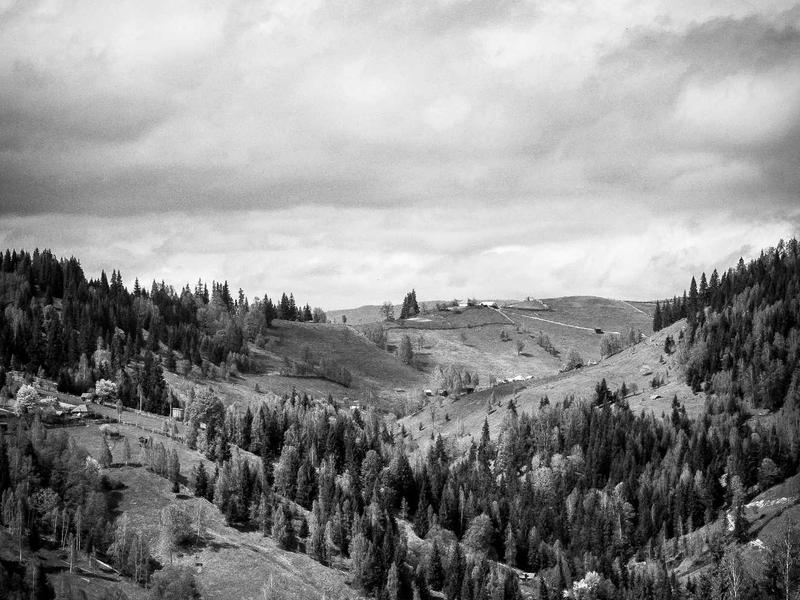
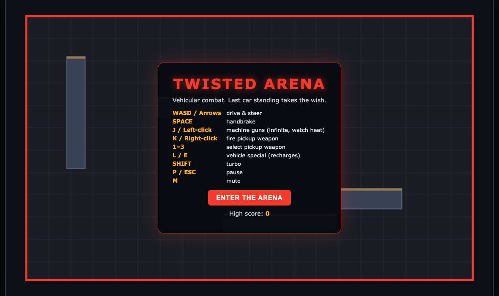
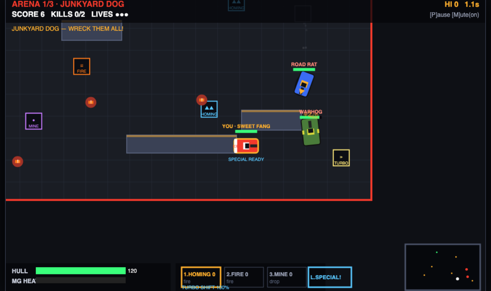
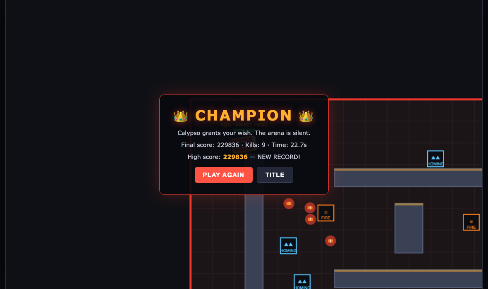
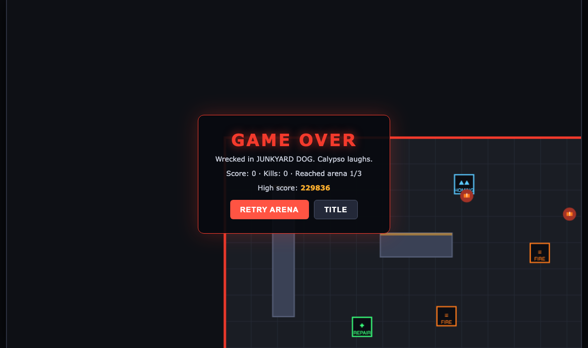
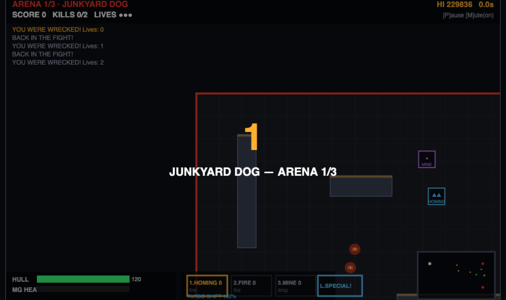

Browser vehicular-combat recreation of Twisted Metal gameplay. Play: twisted-metal/index.html
reference-assets/SOURCES.md)reference-assets/: arena-asphalt, vehicle-brawler, explosion-vfx, pickup-icon, chase-cam, demolition-derby
| Source mechanic | Our implementation | Status |
|---|---|---|
| Infinite MG side-arms + overheat (TM:Black) | J/click MG, heat bar, lockout + cooldown | done |
| Scattered pickup arsenal (homing/fire/mine) | Respawning pads, 1/2/3 selection, AI also collects | done |
| Per-vehicle recharging specials | Napalm cone / Patriot volley / Rat rocket, per-vehicle CDs | done |
| Ram damage | Speed-based mutual damage, faster car wins trade | done |
| Repair zones + explosive barrels | ✚ pads heal over time; ! barrels chain-explode | done |
| Chase camera, screen shake | Follow + velocity lookahead + shake decay, minimap | done |
| Multi-arena progression + score | 3 arenas, kill/damage/time scoring, lives, localStorage hi-score | done |
| Pause / game-over / victory / retry | Title→select→countdown→play⇄pause→clear→win/over; retry arena refills lives | done |
evidence/verification-results.json)keys.J vs keys.KeyJ), AI tick called nonexistent updateAI, death/clear timers desynced by pause (converted to in-update timers)




Updated 2026-09-09 · session 1